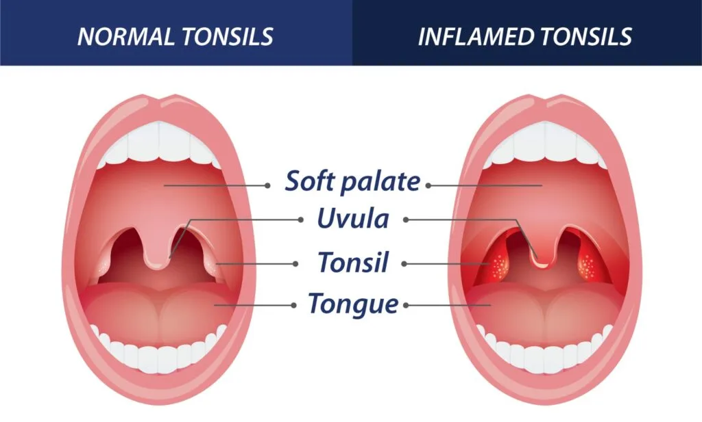
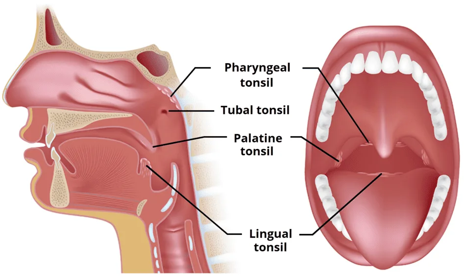
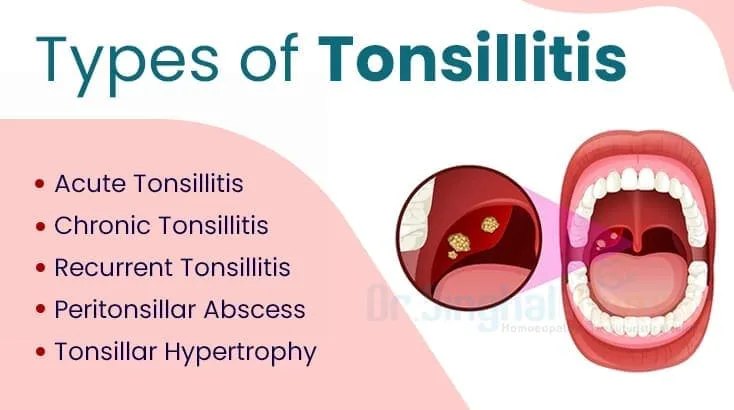
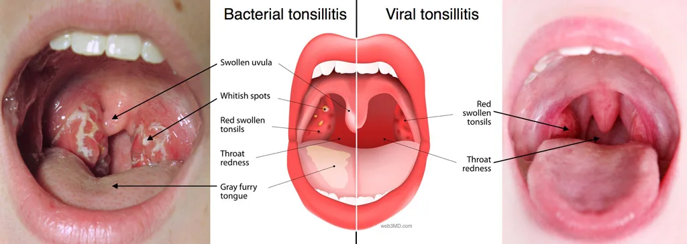
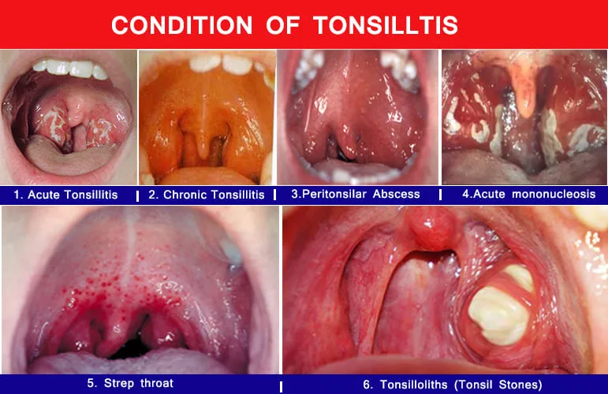
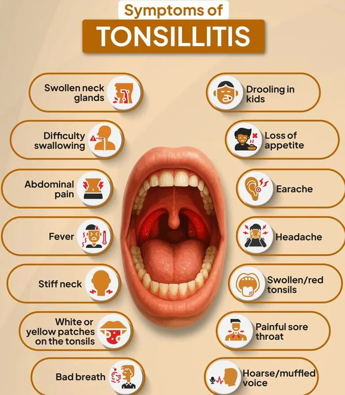
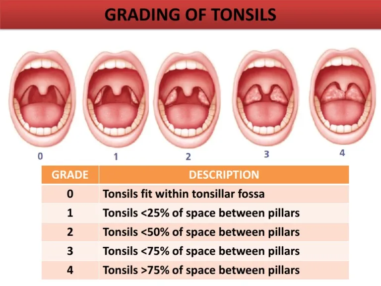

Expanded Nursing Uganda Explanation
Tonsillitis should be understood beyond a short definition. Link the concept to patient history, focused assessment, common risks, nursing priorities, documentation and evaluation of outcomes.
01 Overview
To understand tonsillitis, it's essential to first know what the tonsils are and their role in the body.
- Location: The tonsils are lymphoid tissues located at the back of the throat. The most commonly referred to tonsils are the palatine tonsils , which are two oval-shaped pads of tissue located on either side of the back of the throat, visible upon examination. Other tonsils include the lingual tonsils (at the base of the tongue) and the pharyngeal tonsil (adenoid, located behind the nasal cavity).
- Structure: Each palatine tonsil is covered by mucous membrane and contains crypts (invaginations or pockets) where lymphocytes are present.
- Function: Tonsils are part of the body's lymphatic system and play a crucial role in the immune system . They act as a first line of defense against pathogens (bacteria, viruses) that enter the body through the mouth or nose. They contain immune cells (lymphocytes) that can identify and trap germs, producing antibodies to fight infections. They are particularly active in early childhood when the immune system is developing.
Tonsillitis is an inflammation of the tonsils, most commonly affecting the palatine tonsils. This inflammation results from an infection, which can be caused by either viruses or bacteria.
Tonsillitis is inflammation of the tonsils, two oval-shaped pads of tissue located at the back of the throat (one tonsil on each side). Tonsillitis is contagious especially before signs and symptoms show up. Tonsils act as filters, trapping germs that could otherwise enter the air and cause infection in our body. They also make antibodies. Tonsillitis may be acute or chronic.
- Inflammation: The tonsils become swollen, red, and often painful.
- Infection: It is primarily an infectious process, leading to the body's immune response in the tonsillar tissue.
- Symptoms: Typically characterized by a sore throat, difficulty swallowing (dysphagia), and sometimes fever.
When discussing "types" of tonsillitis, it's helpful to classify them in a few ways:
- Based on Duration and Frequency: This is the most common medical classification.
- Based on Etiology (Cause): Viral vs. Bacterial.
- Related Conditions/Complications often seen in conjunction with Tonsillitis: Conditions that can either be confused with tonsillitis or arise from it.
This is the primary way medical professionals categorize tonsillitis episodes.
- Acute Tonsillitis: A sudden onset of tonsil inflammation due to infection. Symptoms are severe but short-lived. It is usually accompanied by inflammation of the fornices and pharynx. It is more common in children than adults, normally caused by group A Beta streptococcus and sometimes viruses. Presents with Severe sore throat, difficulty swallowing, fever, often headache, malaise.
- Recurrent Tonsillitis: Multiple, distinct episodes of acute tonsillitis occurring frequently over a specific period. This isn't a continuous state but rather repeated acute infections. Common Criteria (often used for considering tonsillectomy): 7 episodes in the past year, OR
- 5 episodes per year in the past 2 years, OR
- 3 episodes per year in the past 3 years.
- Chronic Tonsillitis: Persistent low-grade infection or inflammation of the tonsils that lasts for an extended period, often weeks to months. It may not have the severe acute symptoms but rather a persistent sore throat, bad breath, and sometimes enlarged tonsils with crypts. It is defined as persistent progressive inflammation of the tonsils. If an acute attack re-occurs 5-6 times a year, it indicates that some one has failed to develop immunity and it is considered to be chronic. Presents with Chronic sore throat, bad breath (halitosis), feeling of something stuck in the throat, persistent tenderness of neck lymph nodes.
- Tonsillar Hypertrophy: Enlargement of the tonsils without necessarily being acutely or chronically infected. This can occur due to previous infections, or simply be a normal variation, especially in children. When significantly enlarged, they can obstruct breathing, especially during sleep (sleep apnea). Presents with Snoring, difficulty breathing during sleep, muffled voice, difficulty swallowing large foods.
- Viral Tonsillitis: Caused by various viruses (e.g., adenoviruses, rhinoviruses, influenza, parainfluenza, coronaviruses, Epstein-Barr virus). This is the most common cause of tonsillitis. "Viral" tonsils as red and swollen, but generally without the prominent white patches/exudates often seen in bacterial infections. They may appear more diffusely red. Often accompanied by other viral symptoms like runny nose, cough, hoarseness, conjunctivitis.
- Bacterial Tonsillitis: Most commonly caused by Streptococcus pyogenes (Group A Streptococcus, or GAS), leading to "Strep Throat." Other bacteria can also cause it. "Bacterial" clearly depicts red, swollen tonsils with white spots or exudates. Presents with Sudden onset sore throat, difficulty swallowing, fever, headache, stomach ache/vomiting (especially in children). Often without prominent cough, runny nose, or hoarseness.
These are not "types" of tonsillitis themselves, but important related conditions that are often considered in the grand of tonsillar inflammation.
- Peritonsillar Abscess (Quinsy): A serious complication of acute tonsillitis where an infection spreads behind the tonsil, forming a collection of pus. This is a medical emergency. Presents with Severe unilateral sore throat, fever, difficulty opening the mouth (trismus), muffled "hot potato" voice, drooling, uvula deviation.
- Tonsilloliths (Tonsil Stones): Small, often yellowish-white, calcified masses that form in the crypts (pockets) of the tonsils. They are composed of bacteria, food debris, and mucus. They are not an infection themselves but can be associated with chronic inflammation or contribute to bad breath. Presents with Bad breath, sensation of something stuck in the throat, chronic sore throat, can sometimes cause pain or discomfort.
- Acute Mononucleosis (Glandular Fever): While a systemic viral infection caused by the Epstein-Barr virus (EBV), it very commonly presents with severe tonsillitis as a prominent feature, often with significant exudates and lymph node enlargement. It's often classified as a viral cause of severe tonsillitis.
Understanding the causes (etiology) and contributing factors (risk factors) of tonsillitis is crucial for prevention, diagnosis, and appropriate treatment.
- Prevalence: Viruses are responsible for the majority (approximately 70-85%) of tonsillitis cases, particularly in younger children.
- Common Viruses: Adenoviruses: Very common cause of upper respiratory infections, often causing pharyngitis and tonsillitis.
- Rhinoviruses: The most frequent cause of the common cold.
- Influenza Virus: Causes the flu, often with severe sore throat.
- Parainfluenza Virus: Another common cause of respiratory infections.
- Coronaviruses: Including those that cause common colds.
- Epstein-Barr Virus (EBV): The cause of infectious mononucleosis (glandular fever). This often presents with particularly severe tonsillitis, prominent exudates, and significant lymphadenopathy.
- Herpes Simplex Virus (HSV): Can cause herpetic gingivostomatitis, which can involve the tonsils.
- Cytomegalovirus (CMV): Another virus that can cause a mono-like illness.
- Prevalence: Bacteria account for about 15-30% of tonsillitis cases, with a higher percentage in school-aged children (5-15 years).
- Primary Bacterium: Streptococcus pyogenes (Group A Streptococcus or GAS): This is by far the most common bacterial cause, leading to "Streptococcal pharyngitis" or "Strep Throat." It is clinically significant due to potential non-suppurative complications (e.g., Rheumatic Fever, Post-Streptococcal Glomerulonephritis) if left untreated.
- Other Bacteria (Less Common): Staphylococcus aureus
- Haemophilus influenzae
- Moraxella catarrhalis
- Mycoplasma pneumoniae
- Chlamydophila pneumoniae
- Corynebacterium diphtheriae (rare in developed countries due to vaccination, but causes diphtheria with a characteristic pseudomembrane).
- Anaerobic bacteria (especially in peritonsillar abscesses).
- Age: Children: Tonsillitis is most common in school-aged children (5-15 years old) due to their developing immune systems and increased exposure to germs in school or daycare settings. Viral tonsillitis is more common in very young children, while bacterial tonsillitis (Strep) is more prevalent in children over 3.
- Infants/Toddlers: Rarely get strep throat before age 3.
- Adults: While less common than in children, adults can still get tonsillitis.
- Frequent Exposure to Germs: School/Daycare: Children in these environments are in close contact with many other children, facilitating the spread of viral and bacterial infections.
- Crowded Environments: Living or working in crowded conditions can increase exposure to pathogens.
- Compromised Immune System: Individuals with weakened immune systems (e.g., due to illness, medications, or chronic conditions like HIV) may be more susceptible to recurrent or severe infections, including tonsillitis.
- Smoking/Exposure to Secondhand Smoke: Irritants from smoke can inflame the mucous membranes of the throat and tonsils, making them more vulnerable to infection.
- History of Recurrent Tonsillitis: Individuals who have had tonsillitis multiple times are at higher risk for future episodes. This might be due to genetic predisposition, chronic infection in tonsillar crypts, or persistent exposure.
- Close Contact with an Infected Individual: Tonsillitis-causing pathogens are spread through respiratory droplets (coughing, sneezing, talking). Close proximity to someone with tonsillitis increases the risk of transmission.
- Poor Hygiene: Infrequent handwashing, especially after coughing, sneezing, or before eating, can contribute to the spread of infectious agents.
- Allergies: While not a direct cause, chronic irritation and inflammation from allergies can potentially make the tonsils more susceptible to infection.
The clinical presentation of tonsillitis can vary depending on whether the infection is viral or bacterial, and if it's acute or chronic.
- Sore Throat (Pharyngalgia): This is the most common and often the first symptom. It can range from mild discomfort to severe pain, making swallowing difficult.
- Difficulty Swallowing (Dysphagia/Odynophagia): Pain or discomfort when swallowing food, liquids, and even saliva. Patients may avoid eating and drinking due to this.
- Fever: Often present, ranging from low-grade (common in viral) to high (more common in bacterial). Associated with Chills, body aches (myalgia), headache.
- Red, Swollen Tonsils: The palatine tonsils (visible at the back of the throat) appear enlarged, inflamed, and bright red. This is the defining visual sign.
- Tender, Swollen Lymph Nodes (Cervical Lymphadenopathy): The lymph nodes in the neck, particularly those under the jaw and at the sides of the neck, often become enlarged and painful to the touch as they fight the infection.
- Voice Changes: A muffled or "hot potato" voice can occur due to the swelling in the throat, making articulation difficult.
- Malaise/Fatigue: A general feeling of being unwell, tired, and lacking energy.
While there can be overlap, some signs are more indicative of one cause over the other.
- Runny Nose (Rhinorrhea): Clear or sometimes thicker nasal discharge.
- Cough: Often a dry or productive cough.
- Hoarseness/Laryngitis: Inflammation of the voice box leading to a rough voice.
- Conjunctivitis: Red, watery eyes.
- Oral Ulcers/Vesicles: Small blisters or sores in the mouth (e.g., in herpangina caused by coxsackievirus).
- Absence of Exudates (Often): While viral tonsillitis can have exudates (as seen in severe cases like mononucleosis), they are less consistently present and often less prominent than in bacterial infections.
- White Patches or Streaks on Tonsils (Exudates/Pus): These are collections of pus or fibrin, appearing as white, yellowish, or gray spots or streaks on the surface of the tonsils. This is a classic sign of bacterial tonsillitis.
- Red Spots on the Soft Palate (Petechiae): Tiny, pinpoint red spots on the roof of the mouth, behind the tonsils. This is a strong indicator of Strep Throat.
- Strawberry Tongue: The tongue may appear red and bumpy, resembling a strawberry (early phase white coating, later red and shiny).
- Rash (Scarlatiniform Rash): In some cases of Strep Throat, a fine, red, sandpaper-like rash can develop, indicating Scarlet Fever.
- Nausea, Vomiting, Abdominal Pain: More common in children with Strep Throat.
- Absence of Viral Symptoms (often): Unlike viral tonsillitis, Strep Throat is less likely to be accompanied by cough, runny nose, or conjunctivitis.
- Chronic Tonsillitis: Persistent sore throat, halitosis (bad breath), persistently enlarged tonsils, and sometimes the presence of tonsilloliths (tonsil stones) in the tonsillar crypts.
- Peritonsillar Abscess (Quinsy): Extremely severe, typically unilateral (one-sided) sore throat, severe difficulty swallowing, drooling, trismus (difficulty opening the mouth), muffled "hot potato" voice, and marked deviation of the uvula to the opposite side due to the pus collection pushing the tonsil forward.
Diagnosing tonsillitis involves a combination of patient history, physical examination, and laboratory tests. The primary goal is to determine if the tonsillitis is viral or bacterial, as this impacts treatment.
- Patient History: Symptom Onset and Duration: Acute vs. chronic, gradual vs. sudden.
- Specific Symptoms: Sore throat severity, difficulty swallowing, fever (measured temperature), headache, body aches, cough, runny nose, hoarseness, abdominal pain, nausea/vomiting.
- Exposure History: Recent contact with sick individuals (especially those with strep throat or mono).
- Past Medical History: History of recurrent tonsillitis, allergies, immunosuppression, rheumatic fever.
- Risk Factors: Age, exposure to daycare/school, smoking.
- Physical Examination: General Appearance: Assess for signs of distress, dehydration, fever, and overall well-being.
- Head and Neck Exam: Oropharyngeal Examination (Thorough Throat Inspection): Tonsils: Visual inspection for size, redness, swelling, presence of exudates (white patches or streaks), petechiae on the soft palate, or ulcerations. Your images "1. Acute Tonsillitis," "4. Acute mononucleosis," "5. Strep throat," and the "Bacterial" vs. "Viral" diagrams are excellent examples of what to look for.
- Uvula: Check for deviation, which could indicate a peritonsillar abscess. Your image "3. Peritonsilar Abscess" is a good visual.
- Pharynx: Assess for general redness or inflammation.
- Tongue: Look for "strawberry tongue" (red and bumpy), or any coating.
- Cervical Lymph Nodes: Palpate the neck for tenderness and enlargement of lymph nodes (lymphadenopathy).
- Skin Exam: Check for any rashes (e.g., scarlatiniform rash suggestive of scarlet fever).
Since viral and bacterial tonsillitis often present similarly, laboratory tests are crucial, especially to identify Group A Streptococcus (GAS), which requires antibiotic treatment.
- Rapid Antigen Detection Test (RADT): Procedure: A quick swab of the tonsils and posterior pharynx is taken. The swab is then tested for the presence of GAS antigens.
- Results: Results are typically available within 5-15 minutes.
- Sensitivity/Specificity: High specificity (meaning a positive test is very likely true positive), but variable sensitivity (meaning a negative test might miss some cases, especially in children).
- Usage: If positive, usually indicates GAS infection and antibiotics are prescribed. If negative, especially in children, a throat culture is often recommended due to sensitivity concerns.
- Throat Culture: Procedure: Similar to RADT, a swab of the tonsils and pharynx is taken and sent to a lab to grow any bacteria present.
- Results: Takes 24-48 hours for results.
- "Gold Standard": Throat culture is considered the gold standard for diagnosing GAS pharyngitis due to its high sensitivity.
- Usage: Often performed when RADT is negative, especially in children, or when there's a strong clinical suspicion of strep despite a negative RADT. Not routinely needed if RADT is positive.
- Complete Blood Count (CBC) with Differential: Usage: Not routinely performed for uncomplicated tonsillitis. However, it can be helpful in cases of severe or atypical presentations.
- Findings: Elevated white blood cell count (leukocytosis) with a predominance of neutrophils suggests bacterial infection. Atypical lymphocytes and lymphocytosis may suggest a viral infection like infectious mononucleosis.
- Mononucleosis Spot Test (Monospot Test) or EBV Serology: Usage: Performed if infectious mononucleosis is suspected (e.g., prolonged fatigue, marked lymphadenopathy, significant splenomegaly, very severe tonsillar exudates, particularly in adolescents/young adults).
- Results: Monospot is a rapid test, but can be negative early in the illness or in very young children. EBV serology is more definitive.
- Purpose: These clinical decision rules help stratify the risk of Strep Throat and guide the decision to perform RADT or throat culture.
- Components (Centor Score): Tonsillar Exudates
- Swollen, Tender Anterior Cervical Lymph Nodes
- History of Fever
- Absence of Cough
- A point is given for each present criterion. Higher scores increase the probability of Strep Throat. (McIsaac score adds age modification).
- Usage: Used by clinicians to decide who needs testing for Strep and who can be safely managed symptomatically without testing.
When a patient presents with a sore throat, fever, and tonsillar inflammation, it's nice to consider a range of other conditions that can mimic tonsillitis. Differentiating these helps in avoiding misdiagnosis and ensuring appropriate management.
These are often confused with bacterial tonsillitis due to overlapping symptoms.
- Common Cold (Viral Pharyngitis): Sore throat is usually milder, often accompanied by prominent "cold" symptoms like runny nose, nasal congestion, cough, and sneezing. Tonsils may be mildly red but rarely have significant exudates.
- Infectious Mononucleosis (EBV Pharyngitis): While it often presents with severe tonsillitis , it's accompanied by extreme fatigue, prolonged fever, diffuse lymphadenopathy (especially posterior cervical), and sometimes splenomegaly. Symptoms tend to be more protracted than typical tonsillitis.
- Herpangina: Caused by Coxsackievirus. Characterized by small, painful blisters (vesicles) or ulcers on the tonsils, soft palate, and uvula, rather than diffuse exudates. seen in young children.
- Hand, Foot, and Mouth Disease (HFMD): Also caused by Coxsackievirus. Features include oral lesions (blisters/ulcers anywhere in the mouth, not just tonsils) and a characteristic rash on the hands and feet.
- Influenza (Flu): Abrupt onset of high fever, body aches, headache, fatigue, and dry cough, often preceding or accompanying sore throat.
- Diphtheria: (Rare in vaccinated populations). Formation of a tough, grayish-white pseudomembrane on the tonsils, pharynx, or larynx that bleeds if attempts are made to remove it. Can cause severe systemic toxicity.
- Gonococcal Pharyngitis: Sexually transmitted infection. May be asymptomatic or present with a sore throat and exudative pharyngitis. History is key.
- Peritonsillar Abscess (Quinsy): A complication of tonsillitis, not a primary tonsillitis. Characterized by severe, often unilateral, throat pain, trismus (difficulty opening mouth), "hot potato" voice, drooling, and deviation of the uvula.
- Allergies/Post-Nasal Drip: Chronic irritation from post-nasal drip can cause a persistent sore throat, throat clearing, and cough. Typically no fever, exudates, or marked tonsillar swelling.
- Gastroesophageal Reflux Disease (GERD) / Laryngopharyngeal Reflux (LPR): Acid reflux can irritate the throat, leading to chronic sore throat, hoarseness, sensation of a lump in the throat, and chronic cough. Worse at night or after eating.
- Oral Thrush (Candidiasis): White, creamy patches on the tongue, inner cheeks, and sometimes tonsils that can be scraped off, revealing reddened, sometimes bleeding, tissue underneath. Common in infants, immunocompromised individuals, or those on antibiotics/steroids.
- Agranulocytosis: A severe reduction in white blood cells (neutrophils), leading to profound immunosuppression and severe, often necrotic, pharyngitis/tonsillitis. Patients are usually very ill and may have a history of certain medications.
- Foreign Body: Sharp localized pain, especially with swallowing, often unilateral, due to a fish bone or other foreign object lodged in the tonsil or pharynx.
- Stevens-Johnson Syndrome (SJS) / Toxic Epidermal Necrolysis (TEN): Severe mucocutaneous reactions, often drug-induced, causing painful blistering and erosion of mucous membranes (including oral and pharyngeal) and skin. Patients are very unwell with widespread symptoms.
The management and treatment of tonsillitis are guided by the underlying cause (viral vs. bacterial), the severity of symptoms, and the frequency of recurrence. The goals/aims are:
- To limit and prevent the spread of infection.
- To relieve signs and symptoms such as pain and fever.
- To treat the underlying cause (if bacterial).
- To prevent complications.
This involves symptomatic relief for all types of tonsillitis and specific antimicrobial treatment for bacterial cases.
- Reassurance: Reassure the patient and relatives about the nature of the condition and the plan of care.
- Patient Isolation & Barrier Nursing: Rationale: To limit the spread of infection (especially bacterial or highly contagious viral forms) to other patients or healthcare providers.
- Practice: Admit the patient to a medical isolation ward if deemed necessary. Emphasize isolation precautions and barrier nursing techniques (e.g., hand hygiene, masks, gloves) depending on the pathogen.
- Observations: Vital Signs: Monitor and record temperature, pulse, respiration (TPR), and blood pressure (BP) regularly.
- Specific Observations: Note the degree of tonsillar enlargement and inflammation.
- Complication Monitoring: Observe for facial edema, particularly in the morning, which may suggest nephritis (a potential complication of strep throat).
- Observe for painful joints, suggestive of rheumatic fever (another potential strep complication).
- Monitor fluid intake and output for diminished urine output and albumin, which could indicate renal involvement.
- Continuously observe for the development of other complications (e.g., peritonsillar abscess).
- Fever Management: Tepid Sponging: Use tepid (lukewarm) water sponging to help reduce high fever, particularly in children.
- Antipyretics: Administer analgesics that also reduce fever (antipyretics) like Acetaminophen (Paracetamol) or Ibuprofen.
- Pain Management: Analgesics: Administer appropriate analgesics, such as Acetaminophen or Ibuprofen, to relieve pain and discomfort. Note: Aspirin is generally avoided in children and teenagers due to the risk of Reye's Syndrome.
- Hydration: Encourage Oral Fluids: Emphasize and encourage plenty of oral fluids (at least 4-5 liters in 24 hours if tolerated) to prevent dehydration and soothe the throat. Cold fluids, popsicles, and warm teas can be comforting.
- Oral Hygiene & Throat Soothers: Mouth Gargling: Encourage frequent throat gargling with warm normal saline (salt water) solution to soothe the throat and maintain oral hygiene.
- Mouth Care: Perform regular mouth care to ensure oral hygiene.
- Diet: Highly Nourishing, Soft, Light Diet: Gradually introduce a highly nourishing, soft, and light diet as tolerated. Avoid foods that are sharp, spicy, or difficult to chew and swallow.
- Support for Children: If the patient is a child, provide support for the neck while swallowing to ease discomfort.
- General Nursing Care: Provide daily nursing care as for any other patient, focusing on comfort and hygiene.
- Antibiotics: Indication: Prescribed only when bacterial tonsillitis (most commonly Group A Streptococcus) is confirmed or highly suspected. Antibiotics are ineffective against viral tonsillitis.
- First-Line: Penicillin V (e.g., 500 mg every 6 hours for 10 days) is the antibiotic of choice for Streptococcus pyogenes.
- Alternatives: For those allergic to penicillin: Macrolides (e.g., Erythromycin, Azithromycin) or Cephalexin may be used.
- For severe cases or specific situations: Broader spectrum antibiotics like IV Ceftriaxone might be used initially, particularly if admitting for complications.
- Compliance: Emphasize the importance of completing the entire 10-day course of antibiotics, even if symptoms improve earlier, to ensure complete eradication of the bacteria and prevent complications like rheumatic fever.
Tonsillectomy, the surgical removal of the tonsils, is indicated for specific, usually chronic or severe, conditions where conservative medical management has failed or complications arise.
Tonsillectomy is not indicated for simple tonsillar enlargement unless it causes significant problems, as tonsils naturally decrease in size with age, especially in children. Indications are typically for:
- Chronic Recurrent Tonsillitis: Frequency: When the disease chronically interferes with schooling or daily life due to fear of complications or constant recurrence. Specific criteria often include: 7 episodes in the preceding year, OR
- 5 episodes per year for the preceding 2 years, OR
- 3 episodes per year for the preceding 3 years.
- Each episode must be clinically well-documented (e.g., by a physician with specific symptoms and/or positive rapid strep test/culture).
- Obstructive Sleep Apnea (OSA) / Upper Airway Obstruction: When enlarged tonsils cause significant breathing difficulties during sleep, leading to snoring, apneas (pauses in breathing), or hypopneas (shallow breathing).
- Recurrent Peritonsillar Abscess: After the acute management of a peritonsillar abscess, if there is a history of recurrent PTAs.
- Chronic Tonsillitis: Persistent sore throat, chronic halitosis (bad breath), or presence of tonsilloliths that are resistant to conservative management and significantly impact quality of life.
- Unilateral Tonsil Enlargement (Suspicion of Malignancy): Especially in adults, if one tonsil is significantly larger than the other without apparent cause, to rule out lymphoma or squamous cell carcinoma.
The patient is prepared like any other patient for general anesthesia and surgery, with special emphasis on:
- Thorough Medical History & Physical Exam: To assess overall health and identify any contraindications or risk factors.
- Laboratory Tests: Routine pre-operative blood tests (e.g., CBC, coagulation profile) to ensure the patient is fit for surgery and to assess bleeding risk.
- Oral Care: Emphasis on excellent oral hygiene before surgery to reduce bacterial load.
- Pre-operative Antibiotics: May be administered (e.g., IV Ceftriaxone) to reduce the risk of post-operative infection, although not universally practiced for all tonsillectomies.
- NPO (Nil Per Os): Patient is instructed not to eat or drink for a specified period before surgery.
- Patient Education: Explain the procedure, potential risks, and post-operative expectations to the patient and family.
- Anesthesia: Carried out under general anesthesia.
- Procedure: The tonsil is carefully dissected and removed from the underlying pharyngeal tissue using various surgical techniques (e.g., cold knife dissection, electrocautery, radiofrequency ablation, microdebrider).
After surgery, meticulous care is essential for patient recovery and complication prevention.
- Preparation of Recovery Area: A post-operative bed with all necessary accessories (suction, oxygen, vital sign monitor) is prepared.
- Positioning: Upon transfer from the operating room, the patient is received and nursed in the lateral (side) position with the head down (recovery position) .
- Rationale: This position helps prevent the patient from inhaling blood or tonsil fragments, thus avoiding aspiration, until they are fully alert.
- Post-operative Observations: Frequent Monitoring: Vital signs (TPR & BP) are monitored frequently in the immediate post-operative period.
- Skin Color: Observe skin color for any signs of pallor or cyanosis.
- Bleeding: Crucial observation. Observe for signs of bleeding, which is most commonly detected by: Frequent Swallowing: The patient may be constantly swallowing small amounts of blood, even if not overtly spitting it out. This is a key indicator of bleeding and requires immediate attention.
- Restlessness: Unusual restlessness can also be a sign of bleeding.
- Overt Blood: Spitting up fresh blood.
- If significant bleeding is suspected, the patient will need to be returned to the theatre for ligation of the bleeding points immediately.
- Secretion Management: Encourage the patient to spit out secretions rather than swallowing them, to help monitor for bleeding.
- Antibiotics: Prophylaxis/Treatment: Continue with antibiotics for prophylaxis or to treat potential infections (e.g., IV Ceftriaxone initially, then possibly oral Penicillin V 6 hourly if needed for a longer course).
- Fluid & Diet Progression: Hydration: Encourage sips of cold water or clear fluids as soon as the patient is fully awake and swallows without difficulty. This helps prevent dehydration and may soothe the throat.
- Diet: On the next day, the patient is encouraged to drink and eat soft, bland foods. Avoid hot, spicy, or hard/crunchy foods for at least 1-2 weeks.
- Oral Care: Continue oral care, often with warm saline water gargling (if old enough and able to gargle effectively).
- Pain Management: Provide regular and adequate pain relief, as post-tonsillectomy pain can be significant.
- Discharge & Advice: When the patient improves and meets discharge criteria, they are discharged with clear instructions on pain management, diet, activity restrictions, and signs of complications (especially bleeding) requiring immediate medical attention.
Nursing Diagnoses are clinical judgments about individual, family, or community responses to actual or potential health problems/life processes. They provide the basis for selection of nursing interventions to achieve outcomes for which the nurse has accountability.
- Related To: Inflammation and swelling of the tonsils, pharyngeal irritation.
- As Evidenced By: Patient verbalizing pain (e.g., "my throat hurts"), difficulty swallowing, grimacing, restlessness, increased heart rate, refusal to eat/drink.
- Intervention Rationale
- Assess Pain Regularly assess pain level using a pain scale (e.g., 0-10) and observe non-verbal cues.
- Administer Analgesics Administer prescribed pain medications (e.g., acetaminophen, ibuprofen) as ordered, ensuring proper dosage and timing. Educate patient/parents on avoiding aspirin in children.
- Provide Comfort Measures Encourage warm saline gargles (for older children/adults). Offer throat lozenges or hard candies (avoid in young children). Provide cool or lukewarm liquids; popsicles or ice chips can be soothing. Maintain a humidified environment. Apply a cool compress to the neck externally if tolerated.
- Encourage Rest Promote a quiet environment for rest to conserve energy.
- Educate Teach patient/family about pain management techniques and when to report worsening pain.
- Related To: Difficulty/painful swallowing (odynophagia), fever leading to increased insensible fluid loss.
- As Evidenced By: (Potential signs of dehydration) dry mucous membranes, decreased urine output, poor skin turgor, patient expressing reluctance to drink.
- Intervention Rationale
- Monitor Intake and Output (I&O) Accurately record all fluid intake and urine output.
- Encourage Oral Fluid Intake Offer small, frequent amounts of preferred liquids (water, clear broths, diluted juice, popsicles). Explain the importance of hydration to the patient/family.
- Assess Hydration Status Monitor mucous membranes, skin turgor, fontanelles (in infants), and urine specific gravity.
- Administer IV Fluids If oral intake is severely compromised or signs of dehydration are present, administer intravenous fluids as prescribed.
- Educate Instruct patient/family on recognizing signs of dehydration and the need to increase fluid intake.
- Related To: Painful swallowing, loss of appetite due to illness, difficulty consuming solid foods.
- As Evidenced By: Weight loss (if chronic), reluctance to eat, verbalization of inability to eat, poor intake recorded.
- Intervention Rationale
- Assess Nutritional Status Monitor weight (daily if possible), review dietary intake, and assess for signs of malnutrition.
- Offer Soft, Bland Diet Provide foods that are easy to swallow, non-irritating, and nutritionally dense (e.g., pureed foods, mashed potatoes, cooked cereals, yogurts, soups). Avoid spicy, acidic, or hard/crunchy foods.
- Small, Frequent Meals Offer smaller, more frequent meals/snacks rather than large meals.
- High-Calorie, High-Protein Supplements Consider liquid nutritional supplements if oral intake remains poor.
- Encourage Oral Hygiene Good mouth care before meals can improve appetite and comfort.
- Educate Advise family on appropriate food choices and strategies to encourage intake.
- Related To: Presence of infectious organisms (bacterial/viral), close contact with others.
02 Nursing Uganda Clinical Lens
Use Tonsillitis as a practical nursing topic, not only a memorized definition. Prioritize airway, breathing, circulation, pain, asepsis, wound healing and early complication detection.
- What to understand first: define tonsillitis, identify the normal or expected pattern, then explain what changes when the patient is unwell.
- Why it matters in care: the nurse must recognize risk early, explain findings clearly, document accurately and know when to escalate.
- How to revise it: connect each point to assessment, nursing diagnosis or care problem, intervention, rationale and evaluation.
03 Assessment Guide
- Vital signs, pain, bleeding, perfusion, level of consciousness and injury pattern.
- Wound appearance, drainage, odour, swelling, temperature and surrounding skin.
- Fluid balance, mobility, nutrition, surgical site risk and ordered investigations.
04 Nursing Priorities, Rationales and Outcomes
- Stabilize urgent problems first, then prepare for investigations or theatre care.
- Maintain aseptic technique, pain control, wound care and documentation.
- Prevent shock, infection, pressure injury, deep vein thrombosis and delayed healing.
The rationale for these priorities is patient safety: nursing actions should prevent deterioration, reduce discomfort, support recovery and create clear evidence for the next caregiver.
- Expected outcome: The patient remains stable, wound healing progresses, pain is controlled and complications are recognized early.
05 Patient Teaching and Revision Check
- Explain tonsillitis in simple language the patient or caregiver can repeat back.
- Teach warning signs, medicine or follow-up instructions, hygiene or lifestyle points where relevant.
- For exams, prepare a short answer using: definition, causes or risk factors, signs, assessment, management, complications and prevention.
- For ward practice, document baseline findings, actions taken, patient response and the plan for review.
Illustrations and Diagrams (19)








11 more diagrams available — open the lesson for full illustrations.
Related Video Lectures
Watch nursing lecture videos on YouTube for this topic. Opens in a new tab.
Watch on YouTubeExternal link: YouTube may use its own cookies and terms. Nursing Uganda is not affiliated with YouTube.